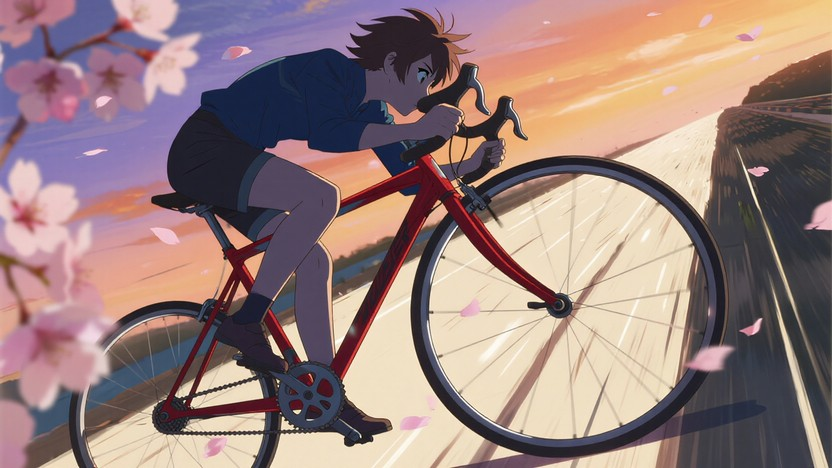
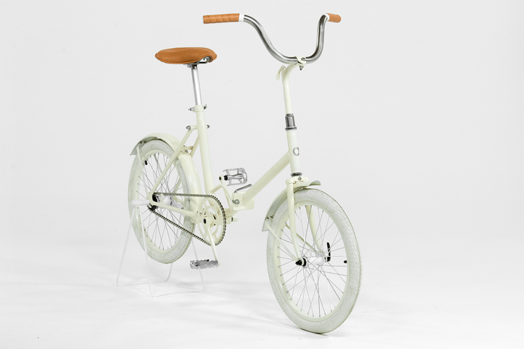
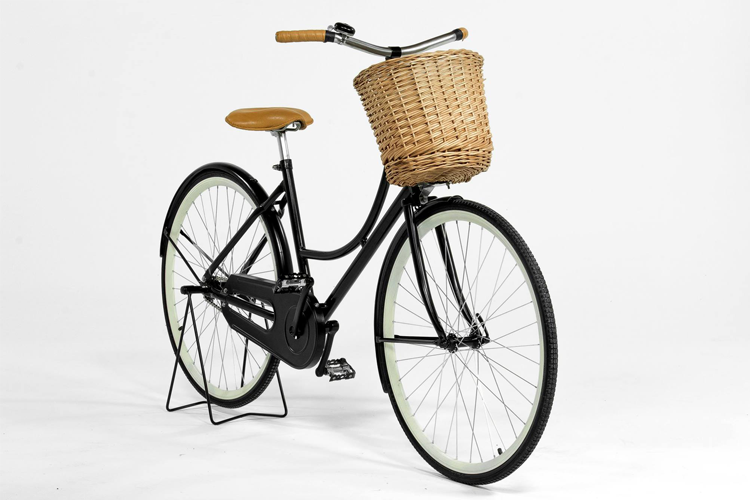
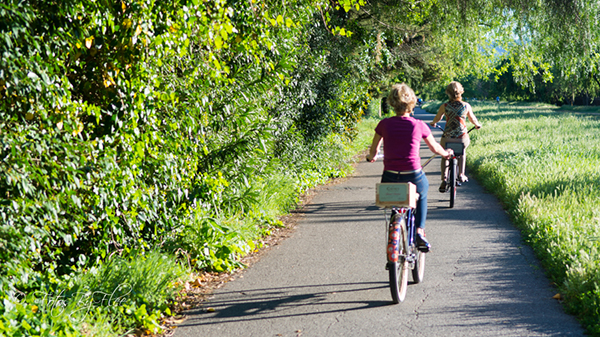
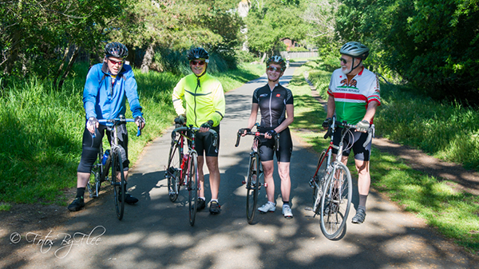
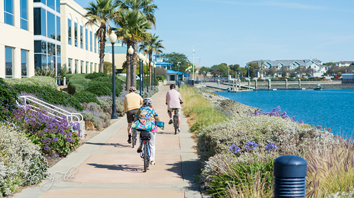
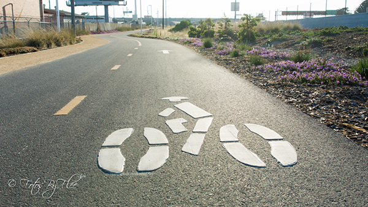

Haight. Coast through crowds of tourists and panhandlers with a peace-loving vibe. Known for durability and high style.

Mission. Whether you live in the Mission, or you're just on one, this durable and affordable bike will turn your commute into a joy ride.
Get out of town and discover the Bay Area with our biking events.

Iron Horse Trail. Explore the Bay Area along the route of the Southern Pacific Railroad established in 1891 between Concord and Pleasanton on this 32 mile trail.

Lafayette-Moraga Trail. Trace this historical 7.65-mile route connecting Las Trampas Ridge to the Oakland Hills, and the cities of Lafayette and Moraga. Once used by mule trains to carry redwood from Oakland to Sacramento!

Rosie the Riveter Trail. Take a trip back through time in this trail around the Rosie the Riveter/World War II Home Front National Historical Park. Hop off your bike to discover the dramatic events of World War II as you go.

Bay Bridge Trail. Beat the traffic - traverse the Bay bridge on your bike, all the way to the iconic 525-foot tower and back. Allows unparalleled views of the Bay.